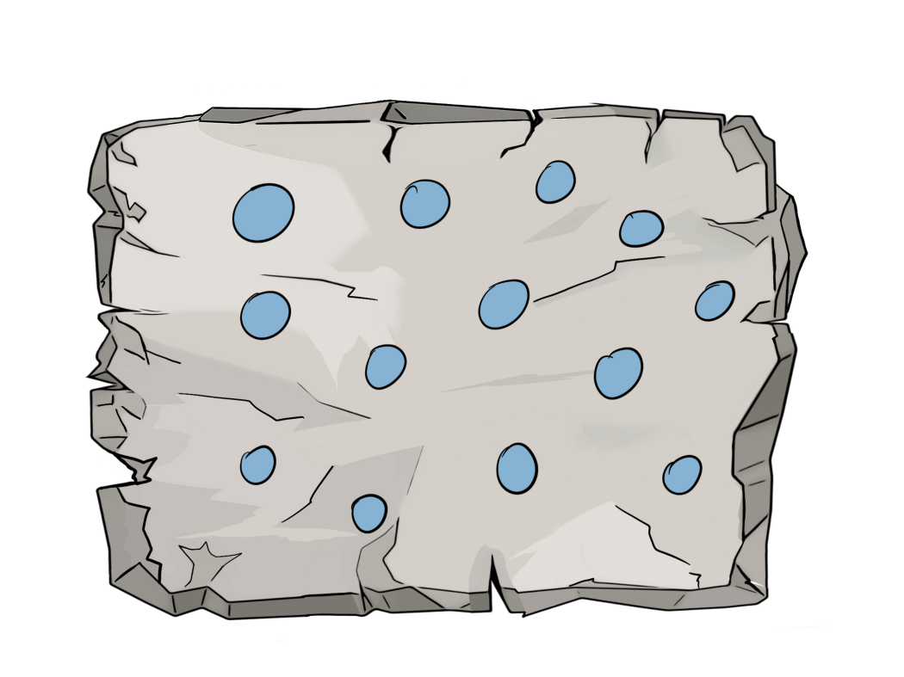
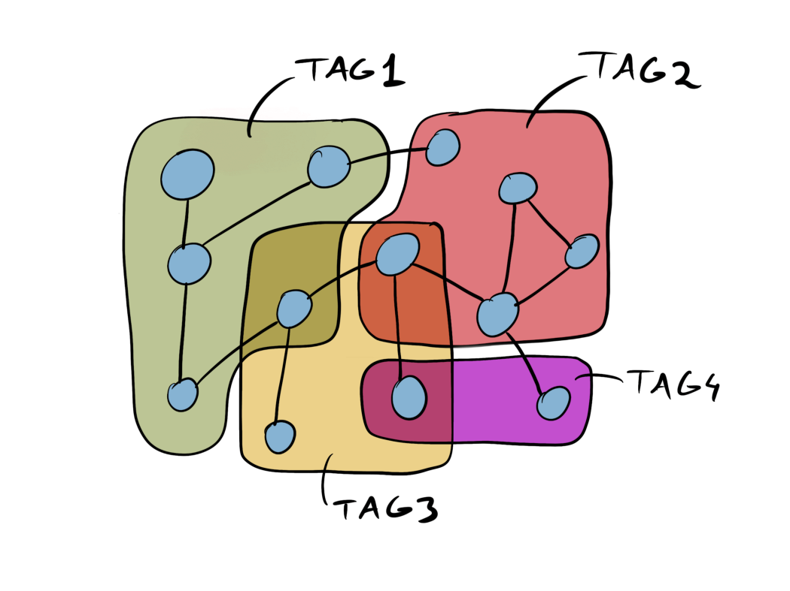
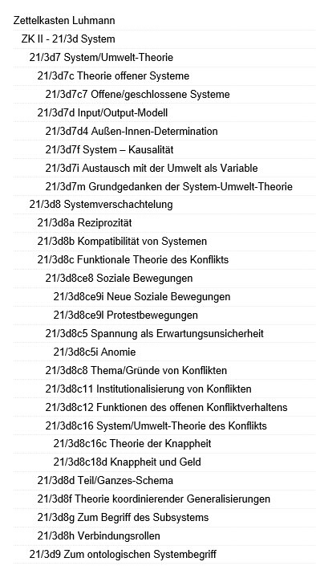

La méthode Zettelkasten est une méthode de prise de notes destinée à accroître la productivité et l’inventivité et mise au point par Niklas Luhmann(1927-1998) chercheur en sociologie à Bielefeld Zettelkasten : petites cases
| Notes prises dans la matrice |  |
Méthode pour prendre des notes d’une lecture à une autre sur le long terme et pour manier des concepts dans différents contextes [(Clear 2021)]
Pas de rangement d’une note dans deux catégories
Comment ranger facilement une note dans une catégorie plus récente et plus pertinente ?
difficulté de gérer un grand nombre de tags
risque d’utiliser deux tags différents pour deux notes ayant le même sujet
| 
pas de catégorie = plus de souplesse, pas de structure interne
chaque note est identifiable par un identifiant unique
dans la version électronique, pas de besoin de ranger les notes par ordre de création[(Lüdecke 2015)]
| 